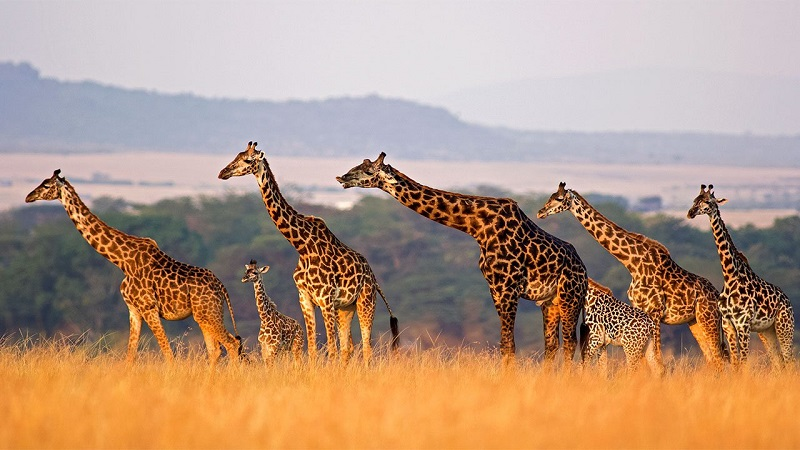

The giraffe is a genus of African even-toed ungulate mammals, the tallest living terrestrial animals and the largest ruminants. Its chief distinguishing characteristics are its extremely long neck and legs, its horn-like ossicones, and its distinctive coat patterns. They usually inhabit savannahs and woodlands. Their food source is leaves, fruits and flowers of woody plants, primarily acacia species, which they browse at heights most other herbivores cannot reach. They may be preyed on by lions, leopards, spotted hyenas and African wild dogs. Giraffes live in herds of related females and their offspring, or bachelor herds of unrelated adult males, but are gregarious and may gather in large aggregations. Males establish social hierarchies through "necking", which are combat bouts where the neck is used as a weapon. Dominant males gain mating access to females, which bear the sole responsibility for raising the young.
Here are several interesting facts about giraffes: